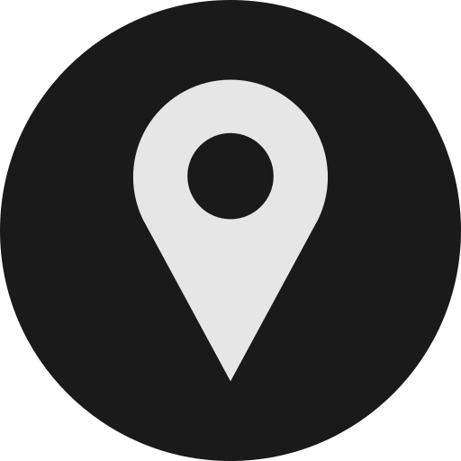

Landmeten, Maatvoering, Opleiding en Kadaster
Horizon Geodesie ondersteunt bedrijven, particulieren en de overheid met al hun vraagstukken en opdrachten op het gebied van landmeetkunde, maatvoering en kadaster. Daarnaast biedt Horizon Geodesie opleidingen aan binnen deze vakgebieden.
Diensten
Landmeten
- Deformatie XYZ
- Revisie
- BAG BGT
- Nulmeting
- Hoeveelheden
- Proefsleuven
- Dwarsprofielen
- Waterpassen
Maatvoering
- Bouw
- Wegenbouw
Opleiding
- Basis Landmeetkunde
- Meten met GNSS
- Meten met Total Station
- Waterpassen analoog
- Waterpassen digitaal
- Maatvoering Wegenbouw
- Maatvoering Bouw
- Werkvoorbereiding
- HTW conform meten en 1ste faseverwerking
- Kadastrale reconstructie
- Maatwerk Trajecten
- Deformatiemeting 1D
- Deformatiemeting 3D
- Revisiemetingen ondergronds
- Traject Landmeten 6 dagen
- Inleiding Landmeten
- Meten en uitzetten met Total Station
- Meten en uitzetten met GNSS
- Werkvoorbereiding
- Revisie
Basis Landmeetkunde
De volgende onderwerpen komen aan de orde:
- Assenstelsels
- Coördinatenberekening
- Inwinningstechnieken
- Puntsbepaling
- Vereffening
- Precisie, idealisatie en betrouwbaarheid
Meten met GNSS
De volgende onderwerpen komen aan de orde:
- Inrichting en werking van het systeem
- Begrippen: RTK DOP
- Gebruik punt- en lijncodering
- Import uitzetgegevens
- Export meetdata
- Aanmaken “on site” meetrapportage uitzetwerk
- Beperkingen/ Foutenbronnen
Na een inleiding van de theorie worden praktische oefeningen met een GNSS-ontvanger buiten uitgevoerd. Op deze manier leren en ervaren de deelnemers direct de werking en de beperkingen van het systeem.
Er wordt een inmeting uitgevoerd van een bestaande situatie. Deze meetgegevens worden geëxporteerd en verwerkt. Op basis van de inmeting wordt een uitzetbestand aangemaakt. Na import in het veldboek wordt de punten buiten in het terrein uitgezet.
Meetrapportage wordt aangemaakt en de verschillen worden in het terrein bekijken en eventueel opnieuw uitgezet.
Meten met Total Station
De volgende onderwerpen komen aan de orde:
- Inrichting en werking van het systeem
- Begrippen: Ondulatie Extrapolatie
- Set-Up: Bekende standplaats Vrije standplaats Referentie lijn
- Gebruik punt- en lijncodering
- Import uitzetgegevens
- Export meetdata
- Aanmaken “on site”meetrapportage uitzetwerk
- Beperkingen/ Foutenbronnen
een inleiding van de theorie worden praktische oefeningen met een Total-Station buiten uitgevoerd. Op deze manier leren en ervaren de deelnemers direct de werking en de beperkingen van het systeem.
Er wordt een inmeting uitgevoerd van een bestaande situatie. Deze meetgegevens worden geëxporteerd en verwerkt. Op basis van de inmeting wordt een uitzetbestand aangemaakt. Na import in het veldboek wordt de punten buiten in het terrein uitgezet.
Meetrapportage wordt aangemaakt en de verschillen worden in het terrein bekijken en eventueel opnieuw uitgezet.
Waterpassen
De volgende onderwerpen komen aan de orde:
- Inrichting en werking van het systeem
- Begrippen: Refractie Sluitfout NAP Doorgaande waterpassing
- Voorwaarden/Controle hoofdvoorwaarde
- Netwerkopbouw
- Export Data
- Vereffening
- Rapportage
- Beperkingen/Foutenbronnen
Na een inleiding van de theorie worden praktische oefeningen met een waterpastoestel buiten uitgevoerd. Op deze manier leren en ervaren de deelnemers direct de werking en de beperkingen van het systeem.
Er wordt een toestelcontrole uitgevoerd. Het resultaat wordt beoordeeld. Aansluitend wordt een doorgaande waterpassing uitgevoerd. In heen- en teruggang. De sluitfout wordt bepaald en beoordeeld.
Waterpassen analoog
Waterpassen digitaal
Maatvoering Wegenbouw
De volgende onderwerpen komen aan de orde:
- Beschrijving werkproces Wegenbouw
- Inzet van de verschillende inwinningstechnieken
- Inrichting Grondslag 2D/3D
- Inlezen uitzetgegevens
- Uitzetten punten/lijnen
- Aanmaken rapportage
Na een inleiding van de theorie worden praktische oefeningen met Total-Station en GNSS ontvanger buiten uitgevoerd. Er wordt een koppeling gemaakt met het NAP netwerk. Op deze manier leren en ervaren de deelnemers direct de werking en de beperkingen van het systeem.
Een wegcunet wordt uitgezet, waarbij de piketten 3D worden uitgezet. Eventueel verklikt in richting en hoogte (zicht).
Aanmaken meetrapportage
Maatvoering Bouw
De volgende onderwerpen komen aan de orde:
- Beschrijving werkproces Bouw
- Inzet van de verschillende inwinningstechnieken
- Inrichting Grondslag 2D/3D, eventueel 2de Kijkerstand
- Inlezen uitzetgegevens
- Uitzetten punten/lijnen
- Aanmaken rapportage
Na een inleiding van de theorie worden praktische oefeningen met Total-Station buiten uitgevoerd. Na set-up in twee kijkerstanden wordt een grondslagnetwerk aangemaakt. Op deze manier leren en ervaren de deelnemers direct de werking en de beperkingen van het systeem.
Een palenplan wordt uitgezet. Er wordt een meetrapportage aangemaakt en beoordeeld.
Werkvoorbereiding
De volgende onderwerpen komen aan de orde:
- Beoordelen Ontvangen tekeningen
- Aanmaken bestandsstructuur per project
- Verschalen en roteren
- Filteren benodigde uitzetgegevens
- Aanmaken en leveren punt/lijnbestanden per deelproject
- Ontvangen uitzetresultaten en as-built.
- Beheer grondslag en meetgegevens
HTW conform meten en verwerken
De volgende onderwerpen komen aan de orde:
- Vastlegging grenzen, nabijheid en inpaspunten
- Gecontroleerd meten
- Relatie met reconstructie
- Verwerking met Move3
In een praktijkopdracht wordt een grens aangewezen.
De cursist maakt, afhankelijk van de terreinsituatie, zelf de keuze tussen Total Station , GNSS of combinatie van beide en legt de grens op de juiste wijze vast. De meting wordt verwerkt tot en met de vrije netwerkvereffening. Oplevering: Move out-1 rapportage.
Kadastrale reconstructie
De volgende onderwerpen komen aan de orde:
- aanvragen veldwerk
- opstellen plan van aanpak
- keuze lokaal, RD of klassieke methode
- eventueel inmeten bestaande situatie
- uitzetten oorspronkelijke situatie
- controle
Afhankelijk van de inhoud van het veldwerk wordt een plan opgesteld op welke manier er gereconstrueerd kan worden.
Er is keuze tussen klassieke methode, lokaal stelsel met Total Station of combinatiemeting met GNNS.
Welke gegevens zichtbaar in het terrein komen nog overeen met de oorspronkelijke situatie? Zijn deze gegevens bruikbaar om als grondslag te dienen?
De oorspronkelijke situatie wordt gecontroleerd uitgezet.
Maatwerk Trajecten
De volgende onderwerpen komen aan de orde:
Deformatiemeting 1D
De volgende onderwerpen komen aan de orde:
Deformatiemeting 3D
De volgende onderwerpen komen aan de orde:
Revisiemetingen ondergronds
De volgende onderwerpen komen aan de orde:
Traject Landmeten 6 dagen
De volgende onderwerpen komen aan de orde:
- Inleiding Landmeten
- Meten en uitzetten met Total Station
- Meten en uitzetten met GNSS
- Werkvoorbereiding
- Revisie
Kadaster
- Reconstructie
- Meetgegevens Derden
- Splitsingen
Contact
- ing. Chris van Trigt
-
(06) 22 09 27 27
-
 info@horizongeodesie.nl
info@horizongeodesie.nl -
(06) 22 09 27 27
-


Strengendijk 2, Ruurlo
-
Horizon Geodesie
- Kvk: 09221725
- Btw: 1662.37.127.B.01